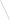

Scroll to the end of the timeline to collect your invitation.
NAVIGATION
Hold & Drag the space. LET’s TRAVERSE THROUGH THE MEMORY LANE.
STELLAR-CLASSIFICATION
MEMORIES
PICTURES
STORIES

HOVER AROUND! EACH STAR REPRESENT A CORE MOMENT, BUT SOME HAVE MORE TO OFFER.
